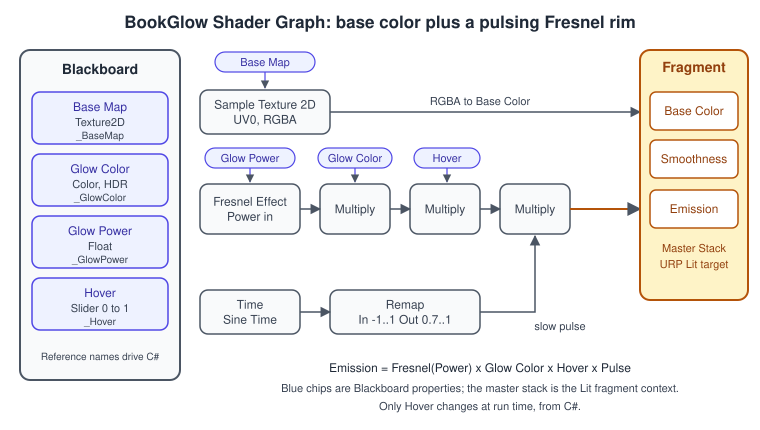
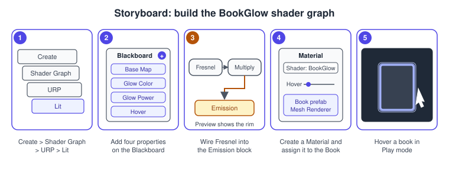
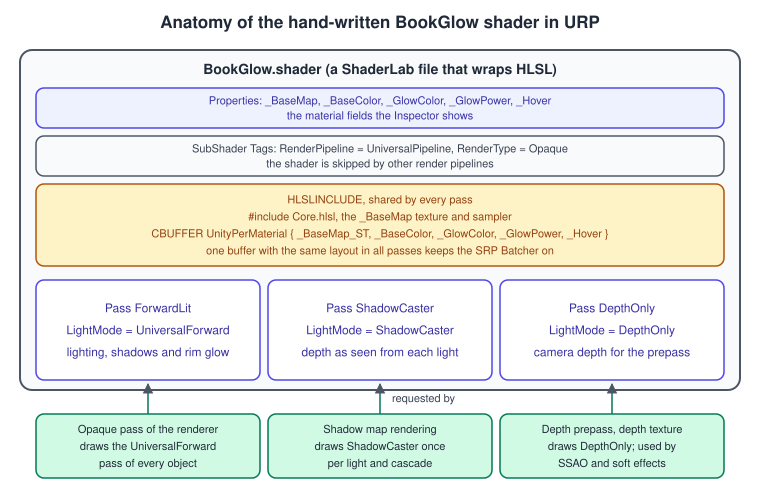

Shader Graph and HLSL
|
This content was generated with the assistance of AI and should be verified against the official documentation before being relied on in production. |
A shader is the small program that decides the color of every pixel of a surface. In Unity you can write one in two ways: connect nodes in Shader Graph, or write ShaderLab and HLSL by hand. Both end up as the same kind of asset, a shader that a material uses, and both run in the same render pipeline. This page builds one effect twice for the Bookshelf, a rim glow that fades in on the book under the mouse pointer (stage "Shader Graph hover glow" of the running example), so the two routes can be compared: first as a graph, with the editor steps and the C# that drives it, then as a hand-written URP shader with its three passes.
The facts were checked in November 2026 against the Unity 6.3 LTS manual (6000.3) and the Shader Graph package version 17.3 that ships with it. Where Unity 6.4, 6.5 or 6.6 changed something, the text says so. The project is the URP 3D template with the Input System, as for the rest of the Bookshelf; the book model is the shared bookshelf.glb. The theory of shading languages and shading models is in Shading Languages Landscape and Lighting and Shading Models; the render pipeline that runs the shaders is described in URP in Depth.
Shader Graph or HLSL
Shader Graph is a package that generates shader code from a node graph. It works with URP and HDRP, and with the Built-in Render Pipeline, but not with a custom Scriptable Render Pipeline. A hand-written shader is a text file in ShaderLab, Unity’s wrapper language, with HLSL for the programs inside it. Neither route is the "advanced" one. The question is who edits the shader and how much control the effect needs.
it in the editor?"} B -->|"yes"| C["Shader Graph"] B -->|"no"| D{"Needs control the graph
cannot express?"} D -->|"no"| C D -->|"yes"| E{"Only one function
needs raw HLSL?"} E -->|"yes"| F["Shader Graph with a
Custom Function node"] E -->|"no"| G["Hand-written HLSL shader"] C --> H["Both routes: keep the SRP Batcher on,
check the Frame Debugger"] F --> H G --> H
| Aspect | Shader Graph | Hand-written HLSL |
|---|---|---|
Authoring |
node graph, instant preview in the Main Preview, properties on the Blackboard |
text file, edited in the code editor; the Inspector shows only what the |
Pipeline support |
URP, HDRP and Built-in targets from one graph (a graph with several targets generates one subshader per target) |
one pipeline per subshader, selected with the |
Lighting |
the Lit target gives PBR lighting, shadows, probes and the Adaptive Probe Volume for free; Unity 6.3 adds custom lighting on the URP Unlit target |
you call the lighting functions yourself and choose the keywords; every new URP lighting feature is your job |
Boilerplate |
none: passes, keywords and the SRP Batcher layout are generated |
the passes, the |
Version control and merges |
a YAML-like asset that merges badly |
plain text that diffs and merges well |
Source: Shader Graph: Graph Target
The anatomy of a shader graph
You create a graph from the Project window. Create > Shader Graph > URP > Lit makes a graph with the URP Lit target already set up, Create > Shader Graph > From Template opens the template browser (new in Unity 6.3), and Create > Shader Graph > Blank Shader Graph gives an empty graph whose target you must choose yourself in the Graph Settings tab. Double-click the asset to open the Shader Graph window.
| Part of the window | What it is |
|---|---|
Toolbar |
saves the asset, toggles the other panels, selects a color mode |
Workspace |
the canvas where you create nodes and connect their ports with wires; hold Alt and drag to pan, scroll to zoom |
Master Stack |
the end point of the graph, made of a Vertex context and a Fragment context; each holds Block nodes such as Base Color, Smoothness and Emission, and which blocks exist depends on the Graph Settings |
Main Preview |
renders the current output on a mesh you can rotate and swap |
Blackboard |
the list of the graph’s properties and keywords, with categories |
Graph Inspector |
node settings and the Graph Settings tab (targets, precision, surface options, Support VFX Graph) |

Properties and their settings
A property is a value the material exposes. Each one has a Name (the label in the Inspector), a Reference (the identifier in the shader, always starting with an underscore, for example _Hover) and a few settings that matter more than they look.
| Setting | Meaning |
|---|---|
Reference |
what C# uses: |
Scope |
Per Material makes the value editable on each material, Global only through the |
Show In Inspector |
off hides the property in the material Inspector by adding |
Precision |
Single is a 32-bit float on desktop, Half a 16-bit float; the graph and each node can override the default. Use Single for world positions and texture coordinates, Half for directions and colors on mobile |
Float mode |
Default, Slider (a range), Integer or Enum; the Bookshelf’s Hover is a slider from 0 to 1 |
Color mode |
Default is an sRGB color picker, HDR lets the color exceed 1 so an emission can feed bloom |
Source: Shader Graph: Property Types
Source: Shader Graph: Blackboard
Precision, color modes and the preview
Every node has a precision (Inherit, Single, Half, Use Graph Precision), and the Color Mode selector in the toolbar can paint nodes by precision or by category so a stray Single node inside a mobile graph stands out. Precision is a platform hint: on a desktop GPU Half usually runs at full width, on a mobile GPU it can save bandwidth and registers.
Source: Shader Graph: Precision Modes
Build the hover glow, step by step
The goal is a material for the book cover that shows the texture and, when the pointer is over the book, a soft rim whose strength is the single property _Hover.
-
In the Project window, right-click and choose Create > Shader Graph > URP > Lit. Name it
BookGlow. The Shader Graph window opens; if it does not, double-click the asset. -
On the Blackboard, select the Add button (the plus sign) and add four properties: a Texture2D with Name
Base Map, a Color with NameGlow Colorand Mode HDR, a Float with NameGlow Power(default 3), and a Float with NameHover, Mode Slider, Min 0, Max 1, default 0. Check the Reference of each in the Graph Inspector:_BaseMap,_GlowColor,_GlowPowerand_Hover. Keep Show In Inspector on for all four. -
Drag
Base Mapinto the workspace, add a Sample Texture 2D node (Input > Texture) and connect the Base Map to its Texture input. Connect its RGBA output to the Base Color block of the Fragment context. -
Add a Fresnel Effect node. Its Normal and View Dir ports are bound to the world-space normal and view direction by default; connect the Glow Power property to its Power port. The node returns a value that grows toward 1 at grazing angles, which is the rim.
-
Add three Multiply nodes in a chain after the Fresnel Effect: first by Glow Color, then by Hover, then by the pulse of the next step. Connect the last Multiply to the Emission block.
-
For the pulse, add a Time node (Input > Basic), take its Sine Time output (a value from -1 to 1) into a Remap node with In Min Max set to (-1, 1) and Out Min Max set to (0.7, 1). Connect the Remap output to the third Multiply. The rim now breathes between 70 % and 100 % of its strength.
-
Set Smoothness on the Fragment context to about 0.3 so the cover does not look like glass. Save the asset with Save Asset.
-
Right-click the saved graph in the Project window and choose Create > Material. Unity assigns the graph to the new material; the Inspector shows the four properties. Assign the material to the cover slot of the Book prefab’s Mesh Renderer.
-
Drag the Hover slider in the material Inspector to check the look, then set it back to 0 and let the C# script of the next section drive it.

Source: Shader Graph: Time Node
Source: Shader Graph: Remap Node
The Fresnel Effect node computes pow(1 - saturate(dot(normal, viewDir)), power): zero where the surface faces the camera, one at the silhouette, and a higher Power concentrates the glow on a thinner rim. In MathJax, with \( N \) the normal, \( V \) the view direction and \( p \) the power:
\[ F = \left( 1 - \max(0, \, N \cdot V) \right)^{ p } \]
Driving the graph from C#
The graph exposes _Hover. A small component fades it toward 1 while the pointer is over the book and back to 0 afterwards, and a picker casts a ray from the pointer with the Input System. The picker reads the pointer from Pointer.current, which covers mouse, pen and touch.
using UnityEngine;
namespace Bookshelf.Shading
{
/// <summary>Fades the _Hover property of every material on this book.</summary>
[RequireComponent(typeof(Renderer))]
public sealed class HoverGlow : MonoBehaviour
{
static readonly int HoverId = Shader.PropertyToID("_Hover");
[SerializeField, Min(0.01f)] float fadeSeconds = 0.15f;
Material[] instances;
float current;
float target;
void Awake()
{
// Renderer.materials clones the shared materials so this book has its own copies.
instances = GetComponent<Renderer>().materials;
}
public void SetHovered(bool hovered)
{
target = hovered ? 1f : 0f;
}
void Update()
{
if (Mathf.Approximately(current, target))
{
return;
}
current = Mathf.MoveTowards(current, target, Time.deltaTime / fadeSeconds);
foreach (Material material in instances)
{
if (material.HasFloat(HoverId))
{
material.SetFloat(HoverId, current);
}
}
}
void OnDestroy()
{
// Cloned materials are not garbage collected; destroy the copies we created.
if (instances == null)
{
return;
}
foreach (Material material in instances)
{
Destroy(material);
}
}
}
}Source: Scripting API: Material.SetFloat
using UnityEngine;
using UnityEngine.InputSystem;
namespace Bookshelf.Shading
{
/// <summary>Raycasts from the pointer and tells the book under it to glow.</summary>
public sealed class BookHoverPicker : MonoBehaviour
{
[SerializeField] Camera viewCamera;
[SerializeField] LayerMask bookMask = ~0;
[SerializeField, Min(1f)] float maxDistance = 20f;
HoverGlow hovered;
void Awake()
{
if (viewCamera == null)
{
viewCamera = Camera.main;
}
}
void Update()
{
Pointer pointer = Pointer.current;
if (pointer == null || viewCamera == null)
{
return;
}
Ray ray = viewCamera.ScreenPointToRay(pointer.position.ReadValue());
HoverGlow next = null;
if (Physics.Raycast(ray, out RaycastHit hit, maxDistance, bookMask, QueryTriggerInteraction.Ignore))
{
next = hit.collider.GetComponentInParent<HoverGlow>();
}
if (next == hovered)
{
return;
}
if (hovered != null)
{
hovered.SetHovered(false);
}
hovered = next;
if (hovered != null)
{
hovered.SetHovered(true);
}
}
}
}Source: Scripting API: Physics.Raycast
Two design choices deserve a word. First, the script reads the property by its integer ID: Shader.PropertyToID is computed once into a static readonly field, so no string is hashed per frame. Second, it clones the materials with Renderer.materials instead of using a MaterialPropertyBlock. A property block would also work, but the SRP Batcher cannot batch a renderer that carries one (see the section on the SRP Batcher below), while a few hundred material copies of the same shader batch without trouble. The cost is memory for each copy and the duty to destroy them. The Input System itself is covered in Input System, and the order in which Awake and Update run in C# Scripting and the MonoBehaviour Lifecycle.
Sub Graphs
A Sub Graph is a shader graph that you include in other graphs, the equivalent of a function. It is saved in its own asset, has an Output node instead of a Master Stack, and its inputs are its Blackboard properties. To make one, select nodes, right-click and choose Convert To Sub-graph, or create an empty one with Create > Shader > Sub Graph. Add it to a graph by dragging the asset in or through Create Node > Sub Graph.
The rim from the Bookshelf graph is a natural Sub Graph: input Power, Color and Strength, output the emission. Other graphs (the lamp shade, the dust billboards) can then share it. Three details matter:
-
A Dropdown node inside a Sub Graph changes its behavior from the parent graph, for example to switch between a hard and a soft rim.
-
Since Unity 6.3 a property or keyword inside a Sub Graph can be promoted to the final shader, which exposes it as a material property of the parent graph. Before, the parent needed its own property wired to a port.
-
Since Unity 6.6 a Sub Graph can be marked deprecated in its Graph Settings: it disappears from the node search and any node that uses it shows a validation warning, which helps retire a Sub Graph in a project that has many.
Source: Shader Graph: Create a Sub Graph
Custom Function nodes
When a calculation is easier to write than to wire, the Custom Function node (Utility category) runs your HLSL inside the graph. You define its input and output ports in the Graph Inspector and give it one of two sources:
-
String mode: you type the body in the node and Unity writes the function around it. You may use
$precisioninstead ofhalforfloat. -
File mode: the node includes an
.hlslfile from your project and calls a function by Name, written without its precision suffix.
In File mode the function name in the file must carry the suffix _float or _half, the arguments must match the ports, and the file needs an include guard. A comment //UNITY_SHADER_NO_UPGRADE stops Unity from rewriting the file when it upgrades shaders. The Bookshelf rim as a file:
//UNITY_SHADER_NO_UPGRADE
#ifndef BOOKSHELF_RIM_INCLUDED
#define BOOKSHELF_RIM_INCLUDED
// Rim strength in [0, 1]: 0 facing the camera, 1 at the silhouette.
void BookRim_float(float3 NormalWS, float3 ViewDirWS, float Power, out float Out)
{
float facing = saturate(dot(normalize(NormalWS), normalize(ViewDirWS)));
Out = pow(1.0 - facing, max(Power, 0.0001));
}
// Half-precision twin so the node also works when the graph runs in half.
void BookRim_half(half3 NormalWS, half3 ViewDirWS, half Power, out half Out)
{
half facing = saturate(dot(normalize(NormalWS), normalize(ViewDirWS)));
Out = pow(1.0h - facing, max(Power, 0.0001h));
}
#endifIn the node set Type to File, Source to this file, Name to BookRim, add three inputs (Vector3 NormalWS, Vector3 ViewDirWS, Float Power) and one Float output named Out, then feed it from the Normal Vector and View Direction nodes in World space. Uniform variables declared in the file become global: they cannot be set per material because they are not in the UnityPerMaterial buffer, only with the Shader.SetGlobal methods. To reuse a configured node, right-click it and choose Convert to Sub Graph.
Unity 6.5 adds a second route: an HLSL function reflection API in which functions in an HLSL file become Shader Graph nodes automatically, with attributes to shape their ports and appearance. The Custom Function node stays available. Unity 6.6 also adds a Preprocessor Directives section to the Graph Settings tab, where you add pragmas, defines and includes without a Custom Function node.
Keywords and shader variants
A keyword turns a branch of the shader on or off, and the compiler builds one variant per combination. Shader Graph exposes keywords on the Blackboard as Boolean or Enum keywords, with a definition (Shader Feature, Multi Compile or Predefined) and a scope. A Shader Feature variant is compiled only if a material in the build uses it; a Multi Compile variant is always compiled. The number of variants grows multiplicatively, which is the main cause of long shader builds and of hitches when a variant is first used at run time.
Unity 6.3 adds Shader Build Settings in the Graphics settings: you can limit the variants by forcing a keyword to shader_feature or dynamic_branch, and exclude keyword code per build profile. Unity 6.5 adds an Allow Definition Override option on keywords so the build settings can override the declared definition.
UI Shader Graph
Unity 6.3 lets UI Toolkit draw elements with Shader Graph: gradients, animated fills, color blends. It works with URP only. You create a graph with the URP UI material type, and the UI nodes and UI input nodes give access to the element’s geometry and tint. Unity 6.6 adds the vertex stage, so a graph can move vertices, tints and UVs and read custom vertex data. The Bookshelf HUD uses it for the score bar; the UI side is in UI Toolkit.
Source: Unity Manual: UI Shader Graph
Writing the shader in HLSL for URP
A hand-written shader is a ShaderLab file. ShaderLab declares the material Properties, the SubShader with its tags, and the Passes; inside each pass, an HLSLPROGRAM block holds the vertex and fragment functions. The RenderPipeline tag set to UniversalPipeline tells Unity to use this subshader only in URP. The LightMode tag of a pass tells the renderer when to run it.

Three rules keep a URP shader healthy:
-
Declare all material properties in one
CBUFFERnamedUnityPerMaterial, identically in every pass. The built-in engine properties (unity_ObjectToWorldand friends) are declared byCore.hlslinUnityPerDraw. Together these make the shader compatible with the SRP Batcher. -
For a texture property named
_BaseMap, declarefloat4 _BaseMap_STin the buffer (the tiling and offset), the texture withTEXTURE2Dand its sampler withSAMPLER, outside the buffer. -
Give the shader at least a
ForwardLit(UniversalForward), aShadowCasterand aDepthOnlypass. Without ShadowCaster the object casts no shadow; without DepthOnly it is missing from the camera depth texture and from depth priming. ADepthNormalspass, which the example omits, is what SSAO uses when it is set to read normals from the depth-normals texture.
The complete shader below reproduces the Bookshelf glow without the graph. The forward pass fills the InputData structure that URP’s lighting functions expect and calls UniversalFragmentBlinnPhong, so the main light, additional lights (including the cluster light loop), shadows and fog all work; the rim goes in through the emission argument. It reads indirect light with SampleSH only, which is enough for books lit by light probes, and it ignores lightmaps and the Adaptive Probe Volume; use a Lit shader graph where those matter.
Shader "Bookshelf/BookGlowHLSL"
{
Properties
{
[MainTexture] _BaseMap("Base Map", 2D) = "white" {}
[MainColor] _BaseColor("Base Color", Color) = (1, 1, 1, 1)
[HDR] _GlowColor("Glow Color", Color) = (1.0, 0.72, 0.35, 1)
_GlowPower("Glow Power", Range(0.5, 8)) = 3
_Hover("Hover", Range(0, 1)) = 0
}
SubShader
{
Tags { "RenderType" = "Opaque" "RenderPipeline" = "UniversalPipeline" "Queue" = "Geometry" }
HLSLINCLUDE
#include "Packages/com.unity.render-pipelines.universal/ShaderLibrary/Core.hlsl"
TEXTURE2D(_BaseMap);
SAMPLER(sampler_BaseMap);
// One buffer, same layout in every pass: required by the SRP Batcher.
CBUFFER_START(UnityPerMaterial)
float4 _BaseMap_ST;
half4 _BaseColor;
half4 _GlowColor;
half _GlowPower;
half _Hover;
CBUFFER_END
ENDHLSL
Pass
{
Name "ForwardLit"
Tags { "LightMode" = "UniversalForward" }
ZWrite On
Cull Back
HLSLPROGRAM
#pragma vertex ForwardVert
#pragma fragment ForwardFrag
#pragma multi_compile _ _MAIN_LIGHT_SHADOWS _MAIN_LIGHT_SHADOWS_CASCADE _MAIN_LIGHT_SHADOWS_SCREEN
#pragma multi_compile _ _ADDITIONAL_LIGHTS_VERTEX _ADDITIONAL_LIGHTS
#pragma multi_compile _ _CLUSTER_LIGHT_LOOP
#pragma multi_compile_fragment _ _ADDITIONAL_LIGHT_SHADOWS
#pragma multi_compile_fragment _ _SHADOWS_SOFT
#pragma multi_compile_fog
#include "Packages/com.unity.render-pipelines.universal/ShaderLibrary/Lighting.hlsl"
struct Attributes
{
float4 positionOS : POSITION;
float3 normalOS : NORMAL;
float2 uv : TEXCOORD0;
};
struct Varyings
{
float4 positionCS : SV_POSITION;
float2 uv : TEXCOORD0;
float3 positionWS : TEXCOORD1;
half3 normalWS : TEXCOORD2;
#ifdef _ADDITIONAL_LIGHTS_VERTEX
half4 fogFactorAndVertexLight : TEXCOORD3;
#else
half fogFactor : TEXCOORD3;
#endif
};
Varyings ForwardVert(Attributes input)
{
Varyings output;
VertexPositionInputs positions = GetVertexPositionInputs(input.positionOS.xyz);
VertexNormalInputs normals = GetVertexNormalInputs(input.normalOS);
output.positionCS = positions.positionCS;
output.positionWS = positions.positionWS;
output.normalWS = normals.normalWS;
output.uv = TRANSFORM_TEX(input.uv, _BaseMap);
half fog = ComputeFogFactor(positions.positionCS.z);
#ifdef _ADDITIONAL_LIGHTS_VERTEX
output.fogFactorAndVertexLight = half4(fog, VertexLighting(positions.positionWS, normals.normalWS));
#else
output.fogFactor = fog;
#endif
return output;
}
half4 ForwardFrag(Varyings input) : SV_Target
{
half4 albedo = SAMPLE_TEXTURE2D(_BaseMap, sampler_BaseMap, input.uv) * _BaseColor;
InputData inputData = (InputData)0;
inputData.positionWS = input.positionWS;
inputData.normalWS = NormalizeNormalPerPixel(input.normalWS);
inputData.viewDirectionWS = GetWorldSpaceNormalizeViewDir(input.positionWS);
inputData.shadowCoord = TransformWorldToShadowCoord(input.positionWS);
#ifdef _ADDITIONAL_LIGHTS_VERTEX
inputData.fogCoord = InitializeInputDataFog(float4(input.positionWS, 1.0), input.fogFactorAndVertexLight.x);
inputData.vertexLighting = input.fogFactorAndVertexLight.yzw;
#else
inputData.fogCoord = InitializeInputDataFog(float4(input.positionWS, 1.0), input.fogFactor);
#endif
inputData.bakedGI = SampleSH(inputData.normalWS);
inputData.normalizedScreenSpaceUV = GetNormalizedScreenSpaceUV(input.positionCS);
inputData.shadowMask = half4(1, 1, 1, 1);
// The same rim as the graph: Fresnel, color, hover amount and a slow pulse.
half rim = pow(saturate(1.0 - dot(inputData.normalWS, inputData.viewDirectionWS)), _GlowPower);
half pulse = lerp(0.7, 1.0, 0.5 + 0.5 * sin(_Time.y * 3.0));
half3 emission = _GlowColor.rgb * (rim * _Hover * pulse);
half4 color = UniversalFragmentBlinnPhong(
inputData, albedo.rgb, half4(0.1, 0.1, 0.1, 1.0), 0.3, emission, 1.0, half3(0.0, 0.0, 1.0));
color.rgb = MixFog(color.rgb, inputData.fogCoord);
return color;
}
ENDHLSL
}
Pass
{
Name "ShadowCaster"
Tags { "LightMode" = "ShadowCaster" }
ZWrite On
ZTest LEqual
ColorMask 0
Cull Back
HLSLPROGRAM
#pragma vertex ShadowVert
#pragma fragment ShadowFrag
#pragma multi_compile_vertex _ _CASTING_PUNCTUAL_LIGHT_SHADOW
#include "Packages/com.unity.render-pipelines.universal/ShaderLibrary/Shadows.hlsl"
// Set by URP for the light that is rendering its shadow map.
float3 _LightDirection;
float3 _LightPosition;
struct ShadowAttributes
{
float4 positionOS : POSITION;
float3 normalOS : NORMAL;
};
struct ShadowVaryings
{
float4 positionCS : SV_POSITION;
};
ShadowVaryings ShadowVert(ShadowAttributes input)
{
float3 positionWS = TransformObjectToWorld(input.positionOS.xyz);
float3 normalWS = TransformObjectToWorldNormal(input.normalOS);
#if _CASTING_PUNCTUAL_LIGHT_SHADOW
float3 lightDirectionWS = normalize(_LightPosition - positionWS);
#else
float3 lightDirectionWS = _LightDirection;
#endif
ShadowVaryings output;
float4 positionCS = TransformWorldToHClip(ApplyShadowBias(positionWS, normalWS, lightDirectionWS));
output.positionCS = ApplyShadowClamping(positionCS);
return output;
}
half4 ShadowFrag(ShadowVaryings input) : SV_Target
{
return 0;
}
ENDHLSL
}
Pass
{
Name "DepthOnly"
Tags { "LightMode" = "DepthOnly" }
ZWrite On
ColorMask R
Cull Back
HLSLPROGRAM
#pragma vertex DepthVert
#pragma fragment DepthFrag
struct DepthAttributes
{
float4 positionOS : POSITION;
};
struct DepthVaryings
{
float4 positionCS : SV_POSITION;
};
DepthVaryings DepthVert(DepthAttributes input)
{
DepthVaryings output;
output.positionCS = TransformObjectToHClip(input.positionOS.xyz);
return output;
}
half DepthFrag(DepthVaryings input) : SV_Target
{
return input.positionCS.z;
}
ENDHLSL
}
}
Fallback Off
}Assign the shader to a material through Shader > Bookshelf > BookGlowHLSL, or create the material in C# from a serialized Shader reference (never with Shader.Find, which is not reliable in builds because the shader may be stripped). The HoverGlow component works unchanged, because it only needs a material with a _Hover float.
A few points in the shader are worth reading twice:
-
The keyword list is the one that the URP prebuilt Simple Lit shader declares in the 6000.3 branch of the URP source. In particular the Forward+ light loop is selected by _CLUSTER_LIGHT_LOOP, not the older _FORWARD_PLUS; a shader copied from a Unity 2022 or early Unity 6 tutorial has the old keyword and silently loses the additional lights. Compare your list with the Simple Lit shader in the URP package when you upgrade.
-
ApplyShadowBias,_LightDirectionand_LightPositionare what make the shadow map bias match the light being rendered; leaving them out gives acne or peter-panning on the books. -
ColorMask Rand the depth value as the output ofDepthFragmirror the DepthOnly pass of the prebuilt URP shaders: the depth prepass writes depth into a single-channel target. -
The fragment function does the lighting through
UniversalFragmentBlinnPhong. For physically based shading with metallic and smoothness, build aSurfaceDataand callUniversalFragmentPBRinstead, as the Lit shader does.
The SRP Batcher and property blocks
The SRP Batcher reduces the CPU cost of draw calls by keeping each material’s constant buffer in GPU memory and replacing a series of state changes by one bind and draw sequence per shader variant. A GameObject takes part in it only if it is a mesh or skinned mesh (not a particle), does not use a MaterialPropertyBlock, and uses a compatible shader: all material properties in one UnityPerMaterial buffer and all engine properties in UnityPerDraw. All URP and HDRP Lit and Unlit shaders qualify, as do Shader Graph shaders. The Inspector of a shader shows whether it is compatible. Many materials with the same shader variant are fine; many shader variants are not, so the best practice is few shaders and many materials.
Common mistakes
-
Setting a property that is not there.
material.SetFloat("_Hover", v)on a material whose shader has no such property does nothing and logs nothing. Check withHasFloatwhile developing, and keep the Reference in one constant. -
Confusing Name and Reference. Renaming the Name is safe; changing the Reference breaks every script and every material override that used the old identifier.
-
Using
renderer.materialinUpdateof many objects. Each first access clones the material; do it once inAwakeand destroy the copy inOnDestroy, or usesharedMaterialand accept that the change affects all users of the asset. -
Using a
MaterialPropertyBlockand wondering why the SRP Batcher stopped. A renderer with a block is taken out of the SRP Batcher path. The Frame Debugger shows the cause on each draw call. -
A hand-written shader without a ShadowCaster pass. The object receives light but casts no shadow. Add the pass, or use
UsePassonly when the pass comes from a shader with an identicalUnityPerMateriallayout. -
Different
CBUFFERcontents in different passes. The shader stops being SRP Batcher compatible. Declare the buffer once, in anHLSLINCLUDE. -
Old keywords and macros from older tutorials. The Built-in pipeline’s
UnityCG.cginc,_Timehelpers andUNITY_MATRIX_MVPare not the URP library; the shader compiles and renders pink. Include the URP shader library and use its functions. -
Building the graph in the wrong target. A graph with no active Universal target renders pink in URP. Check the Active Targets in the Graph Settings tab.
-
Forgetting the precision suffix in a Custom Function file. The node looks for a function whose name ends in
_floator_half; a function without a suffix is not found. Define the version for every precision the node can run in.
Performance notes
-
Fewer shader variants beat cleverer shaders. Prefer
shader_featureovermulti_compilefor material options, strip unused keywords in the Shader Build Settings, and use the Graphics settings to see how many variants a build contains. -
Shader Graph compile time grows with graph size and with each target. A graph that supports several pipelines compiles several subshaders; enable Support VFX Graph only on graphs that a visual effect renders, because those take longer to compile.
-
A transparent rim or glow raises overdraw. The Bookshelf’s rim is on an opaque shader, so it costs only ALU in the fragment stage.
-
Half precision saves bandwidth and registers on mobile GPUs; check the result on the device, since some GPUs run Half at the speed of Single.
-
Unity 6.6 can compile shaders with the DirectX 12 compiler (DXC) instead of FXC on supported platforms, which speeds up builds; DXC is not compatible with DirectX 11, and leaving DX11 in the Graphics API list makes the Editor compile an additional set with FXC.
-
To see what a shader costs, use the Frame Debugger to find the draw call and the SRP batch it belongs to, and a GPU capture tool for the pixel cost. The method is in Performance and Profiling and Profiling and Optimization.
What changed recently
| When | What |
|---|---|
Unity 6.0 (October 2024) |
Unity 6 ships Shader Graph 17 and URP introduces Render Graph, with the old Compatibility Mode kept until its removal in Unity 6.4 |
Unity 6.3 LTS (December 2025) |
Shader Graph templates and the template browser; promoted Sub Graph properties and keywords; 8 UV channels in the UV node; interpolation selection for custom interpolators; custom lighting on the URP Unlit target; Terrain and UI materials through Shader Graph; UI Shader Graph in UI Toolkit; Shader Build Settings to limit variants; Renderer Shader User Value ( |
Unity 6.4 |
a Terrain Properties node for Terrain Lit shader graphs; URP Compatibility Mode removed, so custom render passes use Render Graph |
Unity 6.5 (2026) |
HLSL function reflection API that turns HLSL functions into nodes; Expression and Switch nodes; keyword option Allow Definition Override; "is HDR" option for texture properties; search and filtering in the template browser |
Unity 6.6 (September 2026) |
Preprocessor Directives section in the Graph Settings; deprecating a Sub Graph; particle shader graphs for the Built-in Particle System in URP with five new particle nodes; vertex stage in UI Shader Graph; the DirectX 12 compiler (DXC) for shader compilation; shader constants per build profile |
Source: What’s new in Unity 6.3
Source: What’s new in Unity 6.4
Source: What’s new in Unity 6.5
Source: What’s new in Unity 6.6
Where the books are outdated
Neither book covers Shader Graph or custom HLSL shaders in URP: both were written when the Built-in Render Pipeline and its Standard shader were the default. The only overlap is the material and shader use in UIA (Unity in Action, 3rd edition, chapters 4 and 10, written for Unity 2020.3):
| Topic | What the book shows | Current practice (Unity 6.3 LTS) |
|---|---|---|
Surface shader |
materials with the Standard shader and Built-in render pipeline lighting |
the Built-in Render Pipeline is deprecated since Unity 6.5; new materials use the URP Lit shader or a Shader Graph with a Universal target (see Render Pipelines Overview) |
Writing a shader |
no shader authoring beyond choosing a built-in shader |
Shader Graph for artist-driven effects, HLSL for the cases above; URP shaders include the URP shader library, not |
Light and baking settings |
Lighting window options as in Unity 2020 (including Auto Generate) |
Auto Generate was removed in Unity 6.0 and the GPU lightmapper is the default since 6.3 (see Materials, Textures and Lighting) |
Both books also predate Render Graph, which URP now uses for custom render passes; see Render Graph and Custom Passes.
See also
-
Shading Languages Landscape: HLSL next to GLSL, MSL and WGSL, and how graph editors fit in.
-
Lighting and Shading Models: the Blinn-Phong and PBR models the shaders above implement.
-
The Rendering Pipeline: where the vertex and fragment stages sit.
-
URP in Depth: the renderer, the light loop and the SRP Batcher in context.
-
Render Graph and Custom Passes: a full-screen outline pass built with a shader like these.
-
Materials, Textures and Lighting: the Lit material and texture import that the hover glow builds on.
-
Particles and VFX Graph: shader graphs that render particles.
-
UI Toolkit: where UI Shader Graph is used.
-
Profiling and Optimization: the Frame Debugger and variant counts.
-
GLSL Language: the same shader concepts in the OpenGL shading language.